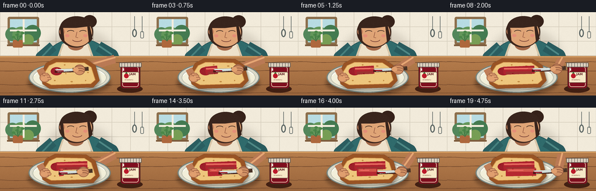
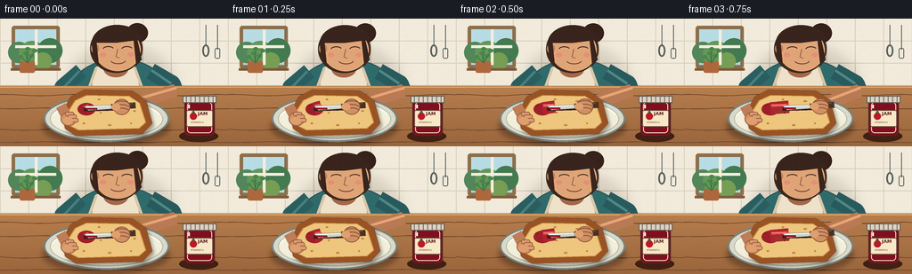

CODING AGENTS AS PIXEL WORLD MODELS
traex/GPT-5.6-Sol · motion_rationality_0019
点击播放 · 原生 RGB 像素
逐轮保存的候选
回放视频、检查图与代码变化。
每份候选均可单独播放。实际图片检查记录在下方工具轨迹中。
候选 01播放与检查图
点击播放 · 原生 RGB 像素

展开代码变化
--- 上一保存版本
+++ 本次保存版本
@@ -0,0 +1,243 @@
+from pathlib import Path
+import math
+import numpy as np
+from PIL import Image, ImageDraw, ImageFont, ImageFilter
+import artifact_io
+
+W,H,N = 256,144,20
+S=4
+SZ=(W*S,H*S)
+
+def pts(seq): return [(round(x*S),round(y*S)) for x,y in seq]
+def box(b): return tuple(round(v*S) for v in b)
+def rgba_layer(): return Image.new('RGBA',SZ,(0,0,0,0))
+def font(size,bold=False):
+ path='/usr/share/fonts/truetype/dejavu/DejaVuSans-Bold.ttf' if bold else '/usr/share/fonts/truetype/dejavu/DejaVuSans.ttf'
+ return ImageFont.truetype(path,round(size*S))
+
+def ellipse_grad(im, b, outer, inner):
+ # Softly nested ellipses, useful for skin and ceramic shading.
+ d=ImageDraw.Draw(im,'RGBA')
+ n=14
+ for i in range(n):
+ q=i/(n-1)
+ x0,y0,x1,y1=b
+ inset=(1-q)*min(x1-x0,y1-y0)*.16
+ col=tuple(round(outer[k]*(1-q)+inner[k]*q) for k in range(3))+(255,)
+ d.ellipse(box((x0+inset,y0+inset,x1-inset,y1-inset)),fill=col)
+
+def draw_background():
+ im=Image.new('RGB',SZ)
+ a=np.asarray(im)
+ # warm cream wall gradient
+ yy=np.arange(H*S)[:,None]
+ base=np.zeros((H*S,W*S,3),np.uint8)
+ base[:,:,0]=np.clip(238-yy*0.018,0,255)
+ base[:,:,1]=np.clip(229-yy*0.022,0,255)
+ base[:,:,2]=np.clip(210-yy*0.020,0,255)
+ im=Image.fromarray(base,'RGB').convert('RGBA')
+ d=ImageDraw.Draw(im,'RGBA')
+ # backsplash, grout, and top molding
+ d.rectangle(box((0,0,256,76)),fill=(242,235,219,255))
+ for x in range(0,257,32): d.line(pts([(x,0),(x,76)]),fill=(215,207,190,120),width=S)
+ for y in (25,50,75): d.line(pts([(0,y),(256,y)]),fill=(215,207,190,115),width=S)
+ # window to garden
+ d.rounded_rectangle(box((13,8,67,56)),radius=3*S,fill=(141,111,76,255))
+ d.rectangle(box((17,12,63,52)),fill=(174,214,219,255))
+ # sky and blurred foliage
+ d.rectangle(box((17,12,63,31)),fill=(184,220,227,255))
+ for cx,cy,r,c in [(21,38,12,(83,135,91,255)),(36,40,15,(100,151,91,255)),(56,36,14,(68,123,81,255)),(48,48,10,(119,158,85,255))]:
+ d.ellipse(box((cx-r,cy-r,cx+r,cy+r)),fill=c)
+ d.rectangle(box((39,12,42,52)),fill=(245,238,222,235)); d.rectangle(box((17,30,63,33)),fill=(245,238,222,235))
+ d.line(pts([(12,57),(68,57)]),fill=(126,92,61,255),width=3*S)
+ # hanging utensil shapes at right
+ d.line(pts([(231,7),(231,31)]),fill=(91,101,99,220),width=S)
+ d.ellipse(box((227,29,235,43)),outline=(91,101,99,220),width=2*S)
+ d.line(pts([(244,7),(244,35)]),fill=(91,101,99,210),width=S)
+ d.rounded_rectangle(box((241,33,247,45)),radius=2*S,outline=(91,101,99,210),width=S)
+ # plant on sill
+ d.rounded_rectangle(box((22,48,39,61)),radius=2*S,fill=(174,104,61,255))
+ for ex,ey in [(23,43),(29,39),(35,42),(39,36),(31,34)]:
+ d.line(pts([(31,50),(ex,ey)]),fill=(66,117,68,255),width=S)
+ d.ellipse(box((ex-3,ey-2,ex+3,ey+2)),fill=(74,135,72,255))
+ return im
+
+BG=draw_background()
+
+# fixed subtle final texture, avoids flat vector look without temporal flicker
+rng=np.random.default_rng(17)
+texture=rng.normal(0,0.85,(H,W,1))
+
+def render(fi):
+ t=fi/(N-1)
+ im=BG.copy()
+ d=ImageDraw.Draw(im,'RGBA')
+ bob=.35*math.sin(fi*.55)
+ # Person behind the work surface: torso/apron first.
+ # soft cast shadow on wall
+ sh=rgba_layer(); sd=ImageDraw.Draw(sh,'RGBA')
+ sd.ellipse(box((75,30,196,125)),fill=(75,56,36,40)); sh=sh.filter(ImageFilter.GaussianBlur(7*S)); im.alpha_composite(sh)
+ d=ImageDraw.Draw(im,'RGBA')
+ # torso teal blouse and ivory apron
+ d.ellipse(box((75,45+bob,192,132+bob)),fill=(48,107,108,255),outline=(31,77,80,255),width=S)
+ d.polygon(pts([(108,54+bob),(151,54+bob),(169,129),(91,129)]),fill=(238,226,203,255))
+ d.line(pts([(108,55+bob),(99,80+bob)]),fill=(217,198,168,255),width=3*S)
+ d.line(pts([(151,55+bob),(160,80+bob)]),fill=(217,198,168,255),width=3*S)
+ d.ellipse(box((116,46+bob,144,66+bob)),fill=(164,105,74,255))
+ # head/hair/ear
+ d.ellipse(box((101,7+bob,160,61+bob)),fill=(62,40,30,255))
+ d.ellipse(box((142,5+bob,166,27+bob)),fill=(54,34,26,255)) # bun
+ ellipse_grad(im,(106,12+bob,158,59+bob),(181,118,82),(224,165,119))
+ d=ImageDraw.Draw(im,'RGBA')
+ d.ellipse(box((102,28+bob,111,39+bob)),fill=(194,128,91,255))
+ # hairline and side locks
+ d.pieslice(box((103,7+bob,160,47+bob)),180,350,fill=(57,37,29,255))
+ d.polygon(pts([(108,24+bob),(111,54+bob),(105,46+bob),(103,27+bob)]),fill=(57,37,29,255))
+ d.polygon(pts([(153,19+bob),(159,46+bob),(153,53+bob),(150,25+bob)]),fill=(57,37,29,255))
+ # face angled down: eyes, nose, warm concentration
+ d.arc(box((115,31+bob,128,38+bob)),195,335,fill=(56,39,31,255),width=S)
+ d.arc(box((136,31+bob,149,38+bob)),195,335,fill=(56,39,31,255),width=S)
+ d.line(pts([(132,34+bob),(130,43+bob),(134,44+bob)]),fill=(151,91,66,210),width=S)
+ d.arc(box((124,43+bob,141,51+bob)),8,165,fill=(111,58,51,255),width=S)
+ d.ellipse(box((112,38+bob,119,43+bob)),fill=(229,143,120,45)); d.ellipse(box((143,38+bob,150,43+bob)),fill=(229,143,120,45))
+ # sleeves / arms behind tabletop
+ # left upper arm bends toward bread
+ d.line(pts([(91,59+bob),(70,77),(67,102)]),fill=(43,94,97,255),width=18*S,joint='curve')
+ d.line(pts([(89,59+bob),(72,77)]),fill=(70,129,127,110),width=3*S)
+ # right sleeve to elbow
+ d.line(pts([(169,59+bob),(193,73),(197,84)]),fill=(41,91,94,255),width=19*S,joint='curve')
+ d.line(pts([(170,58+bob),(192,73)]),fill=(79,137,134,100),width=3*S)
+
+ # table and wood grain
+ d.rectangle(box((0,76,256,144)),fill=(167,112,69,255))
+ # front/top gradient strips
+ for y in range(76,144):
+ q=(y-76)/68
+ d.line(pts([(0,y),(256,y)]),fill=(183-round(30*q),126-round(25*q),77-round(17*q),255),width=S)
+ for y,amp in [(86,10),(101,7),(125,9),(139,5)]:
+ curve=[]
+ for x in range(0,257,8): curve.append((x,y+math.sin(x*.08+y)*amp*.08))
+ d.line(pts(curve),fill=(114,72,44,65),width=S)
+ d.line(pts([(0,77),(256,77)]),fill=(231,177,110,120),width=S)
+
+ # Determine knife/hand path. Two deliberate, anatomically consistent spreading strokes.
+ if fi <= 8:
+ u=fi/8
+ tipx=94+52*(u*u*(3-2*u)); tipy=100.5-1.5*u
+ lift=0; knife_ang=-1.5
+ elif fi <= 10:
+ u=(fi-8)/2
+ tipx=146-47*u; tipy=99-10*math.sin(math.pi*u)
+ lift=4*math.sin(math.pi*u); knife_ang=-6
+ else:
+ u=(fi-10)/9
+ tipx=99+49*(u*u*(3-2*u)); tipy=112-1.5*u
+ lift=0; knife_ang=-1
+ # right forearm from fixed elbow to moving wrist, behind dishes/hand
+ wrist=(tipx+43,tipy-2-lift)
+ d.line(pts([(197,81),wrist]),fill=(186,122,85,255),width=15*S,joint='curve')
+ d.line(pts([(198,78),(wrist[0],wrist[1]-3)]),fill=(231,167,117,120),width=3*S)
+
+ # plate shadow and plate
+ shadow=rgba_layer(); sdraw=ImageDraw.Draw(shadow,'RGBA')
+ sdraw.ellipse(box((48,101,190,143)),fill=(52,28,18,105)); shadow=shadow.filter(ImageFilter.GaussianBlur(3*S)); im.alpha_composite(shadow)
+ d=ImageDraw.Draw(im,'RGBA')
+ d.ellipse(box((49,86,190,139)),fill=(219,218,202,255),outline=(117,133,128,255),width=2*S)
+ d.ellipse(box((56,91,183,135)),fill=(242,239,218,255),outline=(180,183,166,255),width=S)
+ d.arc(box((57,92,182,134)),190,345,fill=(255,255,246,220),width=2*S)
+
+ # bread cast shadow
+ bread_outer=[(69,106),(79,88),(94,80),(148,81),(164,92),(171,118),(160,130),(85,132),(73,124)]
+ bs=rgba_layer(); bd=ImageDraw.Draw(bs,'RGBA')
+ bd.polygon(pts([(x+2,y+3) for x,y in bread_outer]),fill=(46,26,14,105)); bs=bs.filter(ImageFilter.GaussianBlur(2*S)); im.alpha_composite(bs)
+ d=ImageDraw.Draw(im,'RGBA')
+ d.polygon(pts(bread_outer),fill=(153,84,37,255),outline=(100,54,31,255))
+ bread_inner=[(75,106),(84,92),(97,86),(145,87),(157,95),(164,117),(156,124),(88,126),(78,121)]
+ d.polygon(pts(bread_inner),fill=(238,198,125,255),outline=(209,143,70,255),width=S)
+ # crumb texture
+ for cx,cy,rx,ry in [(91,98,2,1),(111,91,1.5,1),(136,93,2,1),(151,104,1.5,1),(94,118,1.4,1),(123,120,2,1),(147,118,1,1),(113,106,1,1)]:
+ d.ellipse(box((cx-rx,cy-ry,cx+rx,cy+ry)),fill=(194,137,66,65))
+
+ # Jam is clipped to the bread's soft interior.
+ jam=rgba_layer(); jd=ImageDraw.Draw(jam,'RGBA')
+ # initial glossy dollop
+ jd.ellipse(box((87,95,107,109)),fill=(151,18,35,235))
+ # First stroke leaves a widening red ribbon.
+ p1=min(1,fi/8)
+ x1=98+52*p1
+ jd.line(pts([(97,101),(x1,99)]),fill=(171,22,40,235),width=14*S)
+ jd.line(pts([(98,98),(x1,97)]),fill=(206,46,57,175),width=3*S)
+ # spread edges become irregular but stay temporally stable
+ if p1>.25:
+ jd.line(pts([(101,105),(100+46*p1,104)]),fill=(137,14,31,205),width=5*S)
+ p2=max(0,min(1,(fi-10)/9))
+ if p2>0:
+ x2=103+50*p2
+ jd.line(pts([(101,112),(x2,111)]),fill=(174,20,39,225),width=13*S)
+ jd.line(pts([(104,108),(103+47*p2,108)]),fill=(200,40,51,180),width=5*S)
+ # clip
+ mask=Image.new('L',SZ,0); md=ImageDraw.Draw(mask)
+ md.polygon(pts(bread_inner),fill=255)
+ alpha=jam.getchannel('A')
+ alpha=np.minimum(np.array(alpha),np.array(mask)).astype(np.uint8)
+ jam.putalpha(Image.fromarray(alpha,'L'))
+ im.alpha_composite(jam)
+ d=ImageDraw.Draw(im,'RGBA')
+ # small specular jam glints; accumulation demonstrates progress
+ if fi>=2: d.line(pts([(98,97),(min(145,99+5*fi),97)]),fill=(255,127,121,100),width=S)
+ if fi>=13: d.line(pts([(107,108),(min(151,104+3*(fi-10)),108)]),fill=(255,116,112,85),width=S)
+
+ # left hand steadies the bread at the crust, thumb visibly pressing down
+ # wrist from sleeve cuff to hand
+ d.line(pts([(68,98),(76,113)]),fill=(191,126,88,255),width=12*S)
+ d.ellipse(box((68,105,86,121)),fill=(211,148,103,255),outline=(155,94,67,255),width=S)
+ # fingers curled over crust
+ for j,(x,y) in enumerate([(76,107),(79,110),(81,114)]):
+ d.rounded_rectangle(box((x-3,y-2,x+7,y+3)),radius=2*S,fill=(223,158,110,255),outline=(158,97,69,220),width=S)
+ d.ellipse(box((70,111,82,119)),fill=(224,159,111,255))
+
+ # knife shadow/contact line then stainless blade, dark handle
+ # geometry uses tip -> bolster -> handle, lightly angled with y position
+ kt=(tipx,tipy-lift)
+ bolster=(tipx+31,tipy-1-lift)
+ hend=(tipx+58,tipy-3-lift)
+ # shadow on bread only when in contact
+ if lift<1:
+ d.line(pts([(tipx,tipy+2),(tipx+37,tipy+1)]),fill=(65,28,23,75),width=4*S)
+ bladepoly=[(tipx,tipy-2-lift),(tipx+30,tipy-3-lift),(tipx+34,tipy+1-lift),(tipx+5,tipy+3-lift)]
+ d.polygon(pts(bladepoly),fill=(204,214,211,255),outline=(91,101,101,255))
+ d.line(pts([(tipx+3,tipy-1-lift),(tipx+29,tipy-2-lift)]),fill=(255,255,248,220),width=S)
+ # jam visible on blade's leading face
+ d.line(pts([(tipx+2,tipy+1-lift),(tipx+15,tipy+1-lift)]),fill=(151,13,31,220),width=2*S)
+ d.line(pts([(tipx+31,tipy-1-lift),hend]),fill=(73,50,37,255),width=7*S)
+ d.line(pts([(tipx+34,tipy-3-lift),(tipx+55,tipy-5-lift)]),fill=(127,91,61,180),width=S)
+ # gripping right hand over the handle; fingers wrap naturally
+ d.ellipse(box((tipx+33,tipy-10-lift,tipx+52,tipy+8-lift)),fill=(209,145,100,255),outline=(147,89,63,255),width=S)
+ for j in range(3):
+ yy=tipy-6+j*4-lift
+ d.arc(box((tipx+34,yy-2,tipx+51,yy+5)),190,350,fill=(139,82,59,220),width=S)
+ d.ellipse(box((tipx+31,tipy-5-lift,tipx+41,tipy+3-lift)),fill=(225,160,111,255))
+
+ # Jam jar in the foreground at far right, unmistakable and not occluding the action.
+ # shadow
+ d.ellipse(box((201,126,245,139)),fill=(66,32,19,90))
+ d.rounded_rectangle(box((207,91,241,132)),radius=5*S,fill=(128,15,31,245),outline=(78,39,33,255),width=S)
+ # glass highlights and red preserve
+ d.rounded_rectangle(box((210,94,238,129)),radius=4*S,outline=(245,222,193,170),width=S)
+ d.rectangle(box((205,87,243,95)),fill=(222,210,192,255),outline=(96,90,83,255),width=S)
+ for x in (209,214,219,224,229,234,239): d.line(pts([(x,88),(x,94)]),fill=(117,111,103,150),width=S)
+ d.rounded_rectangle(box((209,103,239,122)),radius=2*S,fill=(247,232,199,245),outline=(109,76,61,255),width=S)
+ # tiny strawberry icon and clear label
+ d.ellipse(box((213,106,221,114)),fill=(188,25,42,255)); d.polygon(pts([(215,106),(219,106),(217,103)]),fill=(54,116,55,255))
+ d.text((222*S,104*S),'JAM',font=font(5.2,True),fill=(92,31,32,255),anchor=None)
+ d.text((214*S,115*S),'strawberry',font=font(2.8),fill=(115,59,45,255),anchor=None)
+ d.line(pts([(212,97),(212,101)]),fill=(255,255,245,150),width=2*S)
+
+ # downsample with antialias and subtle static grain
+ arr=np.asarray(im.convert('RGB').resize((W,H),Image.Resampling.LANCZOS)).astype(np.float32)
+ arr=np.clip(arr+texture,0,255).astype(np.uint8)
+ return arr
+
+frames=np.stack([render(i) for i in range(N)])
+artifact_io.save(frames,Path(__file__).resolve().parent)
+print('saved',frames.shape,frames.dtype)
可观测工具轨迹
实际执行的命令与返回图片。
命令 1exit 0
/bin/bash -lc "cat prompt.txt && printf '\\n--- RULES ---\\n' && cat GENERATION_RULES.md && printf '\\n--- SPEC ---\\n' && cat task_spec.json"
命令 2exit 0
/bin/bash -lc "find . -maxdepth 2 -type f -printf '%p\\n' | sort"
命令 3exit 0
/bin/bash -lc 'cat artifact_io.py'
命令 4exit 0
/bin/bash -lc "cat > generate.py <<'PY'
from pathlib import Path
import math
import numpy as np
from PIL import Image, ImageDraw, ImageFont, ImageFilter
import artifact_io
W,H,N = 256,144,20
S=4
SZ=(W*S,H*S)
def pts(seq): return [(round(x*S),round(y*S)) for x,y in seq]
def box(b): return tuple(round(v*S) for v in b)
def rgba_layer(): return Image.new('RGBA',SZ,(0,0,0,0))
def font(size,bold=False):
path='/usr/share/fonts/truetype/dejavu/DejaVuSans-Bold.ttf' if bold else '/usr/share/fonts/truetype/dejavu/DejaVuSans.ttf'
return ImageFont.truetype(path,round(size*S))
def ellipse_grad(im, b, outer, inner):
# Softly nested ellipses, useful for skin and ceramic shading.
d=ImageDraw.Draw(im,'RGBA')
n=14
for i in range(n):
q=i/(n-1)
x0,y0,x1,y1=b
inset=(1-q)*min(x1-x0,y1-y0)*.16
col=tuple(round(outer[k]*(1-q)+inner[k]*q) for k in range(3))+(255,)
d.ellipse(box((x0+inset,y0+inset,x1-inset,y1-inset)),fill=col)
def draw_background():
im=Image.new('RGB',SZ)
a=np.asarray(im)
# warm cream wall gradient
yy=np.arange(H*S)[:,None]
base=np.zeros((H*S,W*S,3),np.uint8)
base[:,:,0]=np.clip(238-yy*0.018,0,255)
base[:,:,1]=np.clip(229-yy*0.022,0,255)
base[:,:,2]=np.clip(210-yy*0.020,0,255)
im=Image.fromarray(base,'RGB').convert('RGBA')
d=ImageDraw.Draw(im,'RGBA')
# backsplash, grout, and top molding
d.rectangle(box((0,0,256,76)),fill=(242,235,219,255))
for x in range(0,257,32): d.line(pts([(x,0),(x,76)]),fill=(215,207,190,120),width=S)
for y in (25,50,75): d.line(pts([(0,y),(256,y)]),fill=(215,207,190,115),width=S)
# window to garden
d.rounded_rectangle(box((13,8,67,56)),radius=3*S,fill=(141,111,76,255))
d.rectangle(box((17,12,63,52)),fill=(174,214,219,255))
# sky and blurred foliage
d.rectangle(box((17,12,63,31)),fill=(184,220,227,255))
for cx,cy,r,c in [(21,38,12,(83,135,91,255)),(36,40,15,(100,151,91,255)),(56,36,14,(68,123,81,255)),(48,48,10,(119,158,85,255))]:
d.ellipse(box((cx-r,cy-r,cx+r,cy+r)),fill=c)
d.rectangle(box((39,12,42,52)),fill=(245,238,222,235)); d.rectangle(box((17,30,63,33)),fill=(245,238,222,235))
d.line(pts([(12,57),(68,57)]),fill=(126,92,61,255),width=3*S)
# hanging utensil shapes at right
d.line(pts([(231,7),(231,31)]),fill=(91,101,99,220),width=S)
d.ellipse(box((227,29,235,43)),outline=(91,101,99,220),width=2*S)
d.line(pts([(244,7),(244,35)]),fill=(91,101,99,210),width=S)
d.rounded_rectangle(box((241,33,247,45)),radius=2*S,outline=(91,101,99,210),width=S)
# plant on sill
d.rounded_rectangle(box((22,48,39,61)),radius=2*S,fill=(174,104,61,255))
for ex,ey in [(23,43),(29,39),(35,42),(39,36),(31,34)]:
d.line(pts([(31,50),(ex,ey)]),fill=(66,117,68,255),width=S)
d.ellipse(box((ex-3,ey-2,ex+3,ey+2)),fill=(74,135,72,255))
return im
BG=draw_background()
# fixed subtle final texture, avoids flat vector look without temporal flicker
rng=np.random.default_rng(17)
texture=rng.normal(0,0.85,(H,W,1))
def render(fi):
t=fi/(N-1)
im=BG.copy()
d=ImageDraw.Draw(im,'RGBA')
bob=.35*math.sin(fi*.55)
# Person behind the work surface: torso/apron first.
# soft cast shadow on wall
sh=rgba_layer(); sd=ImageDraw.Draw(sh,'RGBA')
sd.ellipse(box((75,30,196,125)),fill=(75,56,36,40)); sh=sh.filter(ImageFilter.GaussianBlur(7*S)); im.alpha_composite(sh)
d=ImageDraw.Draw(im,'RGBA')
# torso teal blouse and ivory apron
d.ellipse(box((75,45+bob,192,132+bob)),fill=(48,107,108,255),outline=(31,77,80,255),width=S)
d.polygon(pts([(108,54+bob),(151,54+bob),(169,129),(91,129)]),fill=(238,226,203,255))
d.line(pts([(108,55+bob),(99,80+bob)]),fill=(217,198,168,255),width=3*S)
d.line(pts([(151,55+bob),(160,80+bob)]),fill=(217,198,168,255),width=3*S)
d.ellipse(box((116,46+bob,144,66+bob)),fill=(164,105,74,255))
# head/hair/ear
d.ellipse(box((101,7+bob,160,61+bob)),fill=(62,40,30,255))
d.ellipse(box((142,5+bob,166,27+bob)),fill=(54,34,26,255)) # bun
ellipse_grad(im,(106,12+bob,158,59+bob),(181,118,82),(224,165,119))
d=ImageDraw.Draw(im,'RGBA')
d.ellipse(box((102,28+bob,111,39+bob)),fill=(194,128,91,255))
# hairline and side locks
d.pieslice(box((103,7+bob,160,47+bob)),180,350,fill=(57,37,29,255))
d.polygon(pts([(108,24+bob),(111,54+bob),(105,46+bob),(103,27+bob)]),fill=(57,37,29,255))
d.polygon(pts([(153,19+bob),(159,46+bob),(153,53+bob),(150,25+bob)]),fill=(57,37,29,255))
# face angled down: eyes, nose, warm concentration
d.arc(box((115,31+bob,128,38+bob)),195,335,fill=(56,39,31,255),width=S)
d.arc(box((136,31+bob,149,38+bob)),195,335,fill=(56,39,31,255),width=S)
d.line(pts([(132,34+bob),(130,43+bob),(134,44+bob)]),fill=(151,91,66,210),width=S)
d.arc(box((124,43+bob,141,51+bob)),8,165,fill=(111,58,51,255),width=S)
d.ellipse(box((112,38+bob,119,43+bob)),fill=(229,143,120,45)); d.ellipse(box((143,38+bob,150,43+bob)),fill=(229,143,120,45))
# sleeves / arms behind tabletop
# left upper arm bends toward bread
d.line(pts([(91,59+bob),(70,77),(67,102)]),fill=(43,94,97,255),width=18*S,joint='curve')
d.line(pts([(89,59+bob),(72,77)]),fill=(70,129,127,110),width=3*S)
# right sleeve to elbow
d.line(pts([(169,59+bob),(193,73),(197,84)]),fill=(41,91,94,255),width=19*S,joint='curve')
d.line(pts([(170,58+bob),(192,73)]),fill=(79,137,134,100),width=3*S)
# table and wood grain
d.rectangle(box((0,76,256,144)),fill=(167,112,69,255))
# front/top gradient strips
for y in range(76,144):
q=(y-76)/68
d.line(pts([(0,y),(256,y)]),fill=(183-round(30*q),126-round(25*q),77-round(17*q),255),width=S)
for y,amp in [(86,10),(101,7),(125,9),(139,5)]:
curve=[]
for x in range(0,257,8): curve.append((x,y+math.sin(x*.08+y)*amp*.08))
d.line(pts(curve),fill=(114,72,44,65),width=S)
d.line(pts([(0,77),(256,77)]),fill=(231,177,110,120),width=S)
# Determine knife/hand path. Two deliberate, anatomically consistent spreading strokes.
if fi <= 8:
u=fi/8
tipx=94+52*(u*u*(3-2*u)); tipy=100.5-1.5*u
lift=0; knife_ang=-1.5
elif fi <= 10:
u=(fi-8)/2
tipx=146-47*u; tipy=99-10*math.sin(math.pi*u)
lift=4*math.sin(math.pi*u); knife_ang=-6
else:
u=(fi-10)/9
tipx=99+49*(u*u*(3-2*u)); tipy=112-1.5*u
lift=0; knife_ang=-1
# right forearm from fixed elbow to moving wrist, behind dishes/hand
wrist=(tipx+43,tipy-2-lift)
d.line(pts([(197,81),wrist]),fill=(186,122,85,255),width=15*S,joint='curve')
d.line(pts([(198,78),(wrist[0],wrist[1]-3)]),fill=(231,167,117,120),width=3*S)
# plate shadow and plate
shadow=rgba_layer(); sdraw=ImageDraw.Draw(shadow,'RGBA')
sdraw.ellipse(box((48,101,190,143)),fill=(52,28,18,105)); shadow=shadow.filter(ImageFilter.GaussianBlur(3*S)); im.alpha_composite(shadow)
d=ImageDraw.Draw(im,'RGBA')
d.ellipse(box((49,86,190,139)),fill=(219,218,202,255),outline=(117,133,128,255),width=2*S)
d.ellipse(box((56,91,183,135)),fill=(242,239,218,255),outline=(180,183,166,255),width=S)
d.arc(box((57,92,182,134)),190,345,fill=(255,255,246,220),width=2*S)
# bread cast shadow
bread_outer=[(69,106),(79,88),(94,80),(148,81),(164,92),(171,118),(160,130),(85,132),(73,124)]
bs=rgba_layer(); bd=ImageDraw.Draw(bs,'RGBA')
bd.polygon(pts([(x+2,y+3) for x,y in bread_outer]),fill=(46,26,14,105)); bs=bs.filter(ImageFilter.GaussianBlur(2*S)); im.alpha_composite(bs)
d=ImageDraw.Draw(im,'RGBA')
d.polygon(pts(bread_outer),fill=(153,84,37,255),outline=(100,54,31,255))
bread_inner=[(75,106),(84,92),(97,86),(145,87),(157,95),(164,117),(156,124),(88,126),(78,121)]
d.polygon(pts(bread_inner),fill=(238,198,125,255),outline=(209,143,70,255),width=S)
# crumb texture
for cx,cy,rx,ry in [(91,98,2,1),(111,91,1.5,1),(136,93,2,1),(151,104,1.5,1),(94,118,1.4,1),(123,120,2,1),(147,118,1,1),(113,106,1,1)]:
d.ellipse(box((cx-rx,cy-ry,cx+rx,cy+ry)),fill=(194,137,66,65))
# Jam is clipped to the bread's soft interior.
jam=rgba_layer(); jd=ImageDraw.Draw(jam,'RGBA')
# initial glossy dollop
jd.ellipse(box((87,95,107,109)),fill=(151,18,35,235))
# First stroke leaves a widening red ribbon.
p1=min(1,fi/8)
x1=98+52*p1
jd.line(pts([(97,101),(x1,99)]),fill=(171,22,40,235),width=14*S)
jd.line(pts([(98,98),(x1,97)]),fill=(206,46,57,175),width=3*S)
# spread edges become irregular but stay temporally stable
if p1>.25:
jd.line(pts([(101,105),(100+46*p1,104)]),fill=(137,14,31,205),width=5*S)
p2=max(0,min(1,(fi-10)/9))
if p2>0:
x2=103+50*p2
jd.line(pts([(101,112),(x2,111)]),fill=(174,20,39,225),width=13*S)
jd.line(pts([(104,108),(103+47*p2,108)]),fill=(200,40,51,180),width=5*S)
# clip
mask=Image.new('L',SZ,0); md=ImageDraw.Draw(mask)
md.polygon(pts(bread_inner),fill=255)
alpha=jam.getchannel('A')
alpha=np.minimum(np.array(alpha),np.array(mask)).astype(np.uint8)
jam.putalpha(Image.fromarray(alpha,'L'))
im.alpha_composite(jam)
d=ImageDraw.Draw(im,'RGBA')
# small specular jam glints; accumulation demonstrates progress
if fi>=2: d.line(pts([(98,97),(min(145,99+5*fi),97)]),fill=(255,127,121,100),width=S)
if fi>=13: d.line(pts([(107,108),(min(151,104+3*(fi-10)),108)]),fill=(255,116,112,85),width=S)
# left hand steadies the bread at the crust, thumb visibly pressing down
# wrist from sleeve cuff to hand
d.line(pts([(68,98),(76,113)]),fill=(191,126,88,255),width=12*S)
d.ellipse(box((68,105,86,121)),fill=(211,148,103,255),outline=(155,94,67,255),width=S)
# fingers curled over crust
for j,(x,y) in enumerate([(76,107),(79,110),(81,114)]):
d.rounded_rectangle(box((x-3,y-2,x+7,y+3)),radius=2*S,fill=(223,158,110,255),outline=(158,97,69,220),width=S)
d.ellipse(box((70,111,82,119)),fill=(224,159,111,255))
# knife shadow/contact line then stainless blade, dark handle
# geometry uses tip -> bolster -> handle, lightly angled with y position
kt=(tipx,tipy-lift)
bolster=(tipx+31,tipy-1-lift)
hend=(tipx+58,tipy-3-lift)
# shadow on bread only when in contact
if lift<1:
d.line(pts([(tipx,tipy+2),(tipx+37,tipy+1)]),fill=(65,28,23,75),width=4*S)
bladepoly=[(tipx,tipy-2-lift),(tipx+30,tipy-3-lift),(tipx+34,tipy+1-lift),(tipx+5,tipy+3-lift)]
d.polygon(pts(bladepoly),fill=(204,214,211,255),outline=(91,101,101,255))
d.line(pts([(tipx+3,tipy-1-lift),(tipx+29,tipy-2-lift)]),fill=(255,255,248,220),width=S)
# jam visible on blade's leading face
d.line(pts([(tipx+2,tipy+1-lift),(tipx+15,tipy+1-lift)]),fill=(151,13,31,220),width=2*S)
d.line(pts([(tipx+31,tipy-1-lift),hend]),fill=(73,50,37,255),width=7*S)
d.line(pts([(tipx+34,tipy-3-lift),(tipx+55,tipy-5-lift)]),fill=(127,91,61,180),width=S)
# gripping right hand over the handle; fingers wrap naturally
d.ellipse(box((tipx+33,tipy-10-lift,tipx+52,tipy+8-lift)),fill=(209,145,100,255),outline=(147,89,63,255),width=S)
for j in range(3):
yy=tipy-6+j*4-lift
d.arc(box((tipx+34,yy-2,tipx+51,yy+5)),190,350,fill=(139,82,59,220),width=S)
d.ellipse(box((tipx+31,tipy-5-lift,tipx+41,tipy+3-lift)),fill=(225,160,111,255))
# Jam jar in the foreground at far right, unmistakable and not occluding the action.
# shadow
d.ellipse(box((201,126,245,139)),fill=(66,32,19,90))
d.rounded_rectangle(box((207,91,241,132)),radius=5*S,fill=(128,15,31,245),outline=(78,39,33,255),width=S)
# glass highlights and red preserve
d.rounded_rectangle(box((210,94,238,129)),radius=4*S,outline=(245,222,193,170),width=S)
d.rectangle(box((205,87,243,95)),fill=(222,210,192,255),outline=(96,90,83,255),width=S)
for x in (209,214,219,224,229,234,239): d.line(pts([(x,88),(x,94)]),fill=(117,111,103,150),width=S)
d.rounded_rectangle(box((209,103,239,122)),radius=2*S,fill=(247,232,199,245),outline=(109,76,61,255),width=S)
# tiny strawberry icon and clear label
d.ellipse(box((213,106,221,114)),fill=(188,25,42,255)); d.polygon(pts([(215,106),(219,106),(217,103)]),fill=(54,116,55,255))
d.text((222*S,104*S),'JAM',font=font(5.2,True),fill=(92,31,32,255),anchor=None)
d.text((214*S,115*S),'strawberry',font=font(2.8),fill=(115,59,45,255),anchor=None)
d.line(pts([(212,97),(212,101)]),fill=(255,255,245,150),width=2*S)
# downsample with antialias and subtle static grain
arr=np.asarray(im.convert('RGB').resize((W,H),Image.Resampling.LANCZOS)).astype(np.float32)
arr=np.clip(arr+texture,0,255).astype(np.uint8)
return arr
frames=np.stack([render(i) for i in range(N)])
artifact_io.save(frames,Path(__file__).resolve().parent)
print('saved',frames.shape,frames.dtype)
PY
python generate.py"命令 5exit 0
/bin/bash -lc "ls -lh pixels.npz index.html inspection.png frames/00.png frames/19.png && python - <<'PY'
import numpy as np
z=np.load('pixels.npz')['pixels']
print(z.shape,z.dtype,'frame unique:',[len(np.unique(z[:,:,i])) for i in range(z.shape[2])])
print('changed pixels:',[int(np.count_nonzero(z[:,:,i]"'!=z[:,:,i-1])) for i in range(1,20)])
PY'视觉工具实际返回图片 1

视觉工具实际返回图片 2

保存候选 1 份；完成命令 5 次；可验证图片返回 2 张。原始 API 响应与完整日志保留在本地。